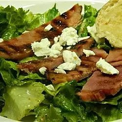

Recipe 2

Ham steak paired with a mustard dressing makes a quick low-carb dinner.
Ingredients
- 1 pound ham steak
- ooking spray
Steps
- Preheat an outdoor grill for medium-high heat and lightly oil the grate.
- Coat ham steak on both sides with cooking spray; season with black pepper to taste.